Code
library(tidyverse) # For ggplot, dplyr, and friends
library(patchwork) # For combining ggplot plots
library(GGally) # For scatterplot matrices
library(broom) # For converting model objects to data framesFor this example, we’re going to use historical weather data from the now-defunct Dark Sky about wind speed and temperature trends for downtown Atlanta (specifically 33.754557, -84.390009) in 2019. I downloaded this data using Dark Sky’s (now-retired-because-they-were-bought-by-Apple) API using the {darksky} package. If you want to follow along with this example, you can download the data below (you’ll likely need to right click and choose “Save Link As…”):
This is a slightly cleaned up version of the code from the video.
First, we load the libraries we’ll be using:
library(tidyverse) # For ggplot, dplyr, and friends
library(patchwork) # For combining ggplot plots
library(GGally) # For scatterplot matrices
library(broom) # For converting model objects to data framesThen we load the data with read_csv(). Here I assume that the CSV file lives in a subfolder in my project named data:
weather_atl <- read_csv("data/atl-weather-2019.csv")It is fine (and often helpful!) to use two y-axes if the two different scales measure the same thing, like counts and percentages, Fahrenheit and Celsius, pounds and kilograms, inches and centimeters, etc.
To do this, you need to add an argument (sec.axis) to scale_y_continuous() to tell it to use a second axis. This sec.axis argument takes a sec_axis() function that tells ggplot how to transform the scale. You need to specify a formula or function that defines how the original axis gets transformed. This formula uses a special syntax. It needs to start with a ~, which indicates that it’s a function, and it needs to use . to stand in for the original value in the original axis.
Since the equation for converting Fahrenheit to Celsius is this…
\[ \text{C} = (32 - \text{F}) \times -\frac{5}{9} \]
…we can specify this with code like so (where . stands for the Fahrenheit value):
~ (32 - .) * -5 / 9Here’s a plot of daily high temperatures in Atlanta throughout 2019, with a second axis:
ggplot(weather_atl, aes(x = time, y = temperatureHigh)) +
geom_line() +
scale_y_continuous(sec.axis = sec_axis(trans = ~ (32 - .) * -5/9,
name = "Celsius")) +
labs(x = NULL, y = "Fahrenheit") +
theme_minimal()
## Warning: The `trans` argument of `sec_axis()` is deprecated as of ggplot2 3.5.0.
## ℹ Please use the `transform` argument instead.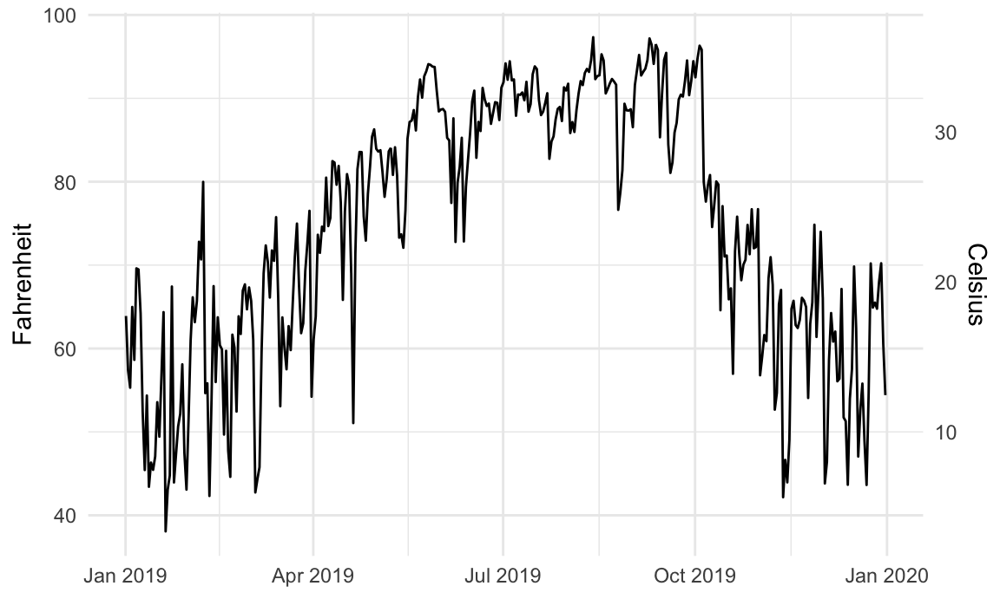
For fun, we could also convert it to Kelvin, which uses this formula:
\[ \text{K} = (\text{F} - 32) \times \frac{5}{9} + 273.15 \]
ggplot(weather_atl, aes(x = time, y = temperatureHigh)) +
geom_line() +
scale_y_continuous(sec.axis = sec_axis(trans = ~ (. - 32) * 5/9 + 273.15,
name = "Kelvin")) +
labs(x = NULL, y = "Fahrenheit") +
theme_minimal()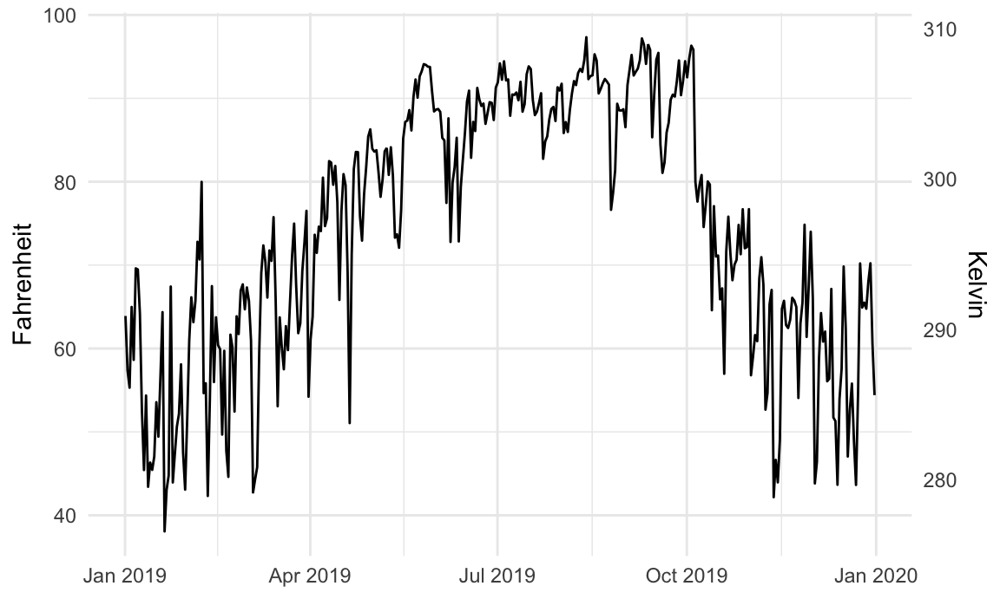
A good alternative to using two y-axes is to use two plots instead. The {patchwork} package makes this really easy to do with R. There are other similar packages that do this, like {cowplot} and {gridExtra}, but I’ve found that {patchwork} is the easiest to use and it actually aligns the different plot elements like axis lines and legends (yay alignment in CRAP!). The documentation for {patchwork} is really great and full of examples—you should check it out to see all the things you can do with it!
To use {patchwork}, we need to (1) save our plots as objects and (2) add them together with +.
For instance, is there a relationship between temperature and humidity in Atlanta? We can plot both:
# Temperature in Atlanta
temp_plot <- ggplot(weather_atl, aes(x = time, y = temperatureHigh)) +
geom_line() +
geom_smooth() +
scale_y_continuous(sec.axis = sec_axis(trans = ~ (32 - .) * -5/9,
name = "Celsius")) +
labs(x = NULL, y = "Fahrenheit") +
theme_minimal()
temp_plot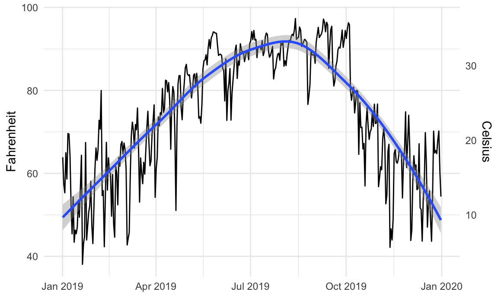
# Humidity in Atlanta
humidity_plot <- ggplot(weather_atl, aes(x = time, y = humidity)) +
geom_line() +
geom_smooth() +
labs(x = NULL, y = "Humidity") +
theme_minimal()
humidity_plot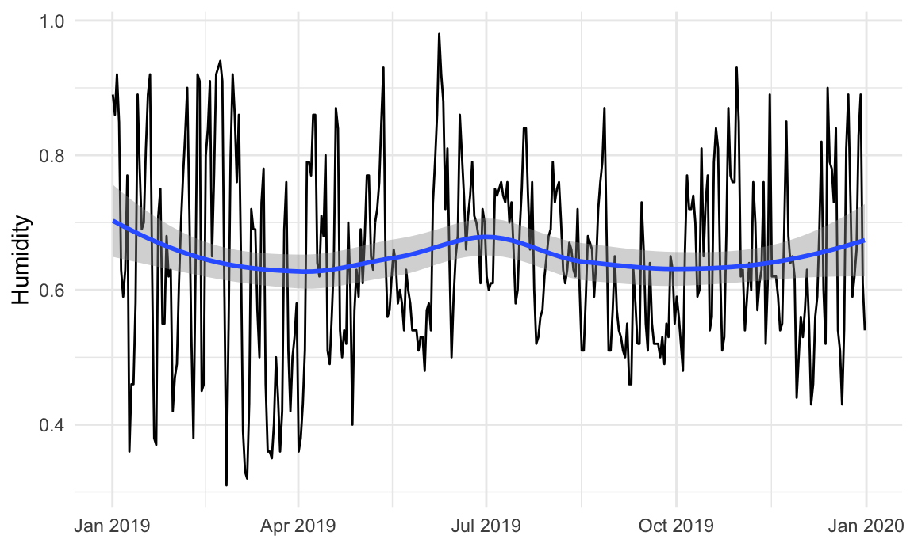
Right now, these are two separate plots, but we can combine them with + if we load {patchwork}:
library(patchwork)
temp_plot + humidity_plot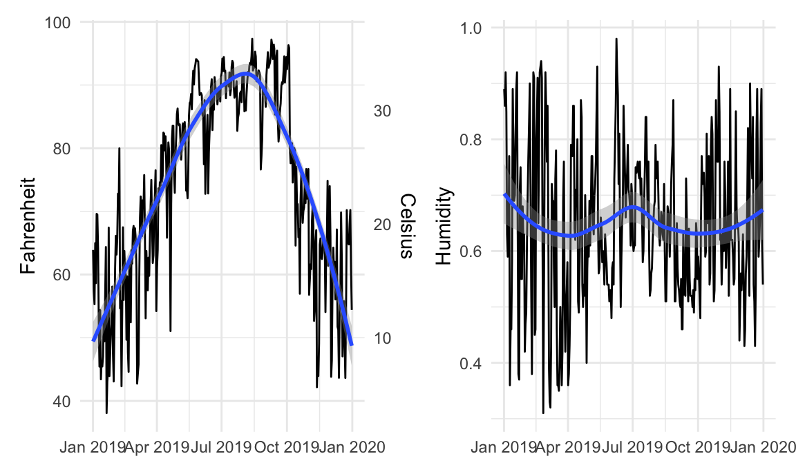
By default, {patchwork} will put these side-by-side, but we can change that with the plot_layout() function:
temp_plot + humidity_plot +
plot_layout(ncol = 1)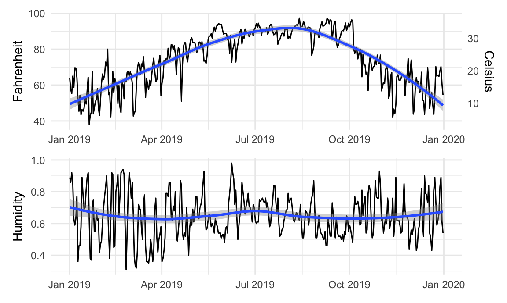
We can also play with other arguments in plot_layout(). If we want to make the temperature plot taller and shrink the humidity section, we can specify the proportions for the plot heights. Here, the temperature plot is 70% of the height and the humidity plot is 30%:
temp_plot + humidity_plot +
plot_layout(ncol = 1, heights = c(0.7, 0.3))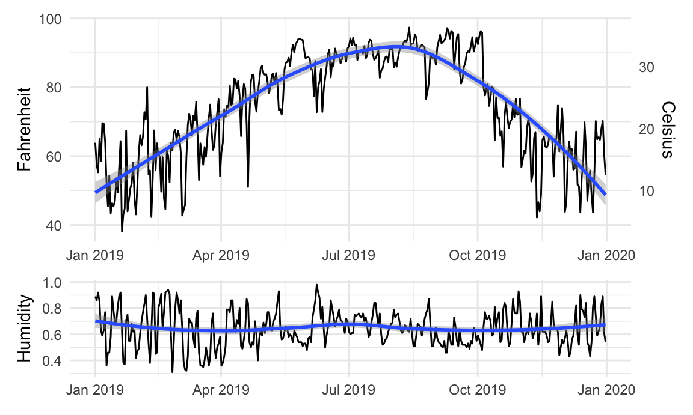
We can visualize the correlations between pairs of variables with the ggpairs() function in the {GGally} package. For instance, how correlated are high and low temperatures, humidity, wind speed, and the chance of precipitation? We first make a smaller dataset with just those columns, and then we feed that dataset into ggpairs() to see all the correlation information:
library(GGally)
weather_correlations <- weather_atl |>
select(temperatureHigh, temperatureLow, humidity, windSpeed, precipProbability)
ggpairs(weather_correlations)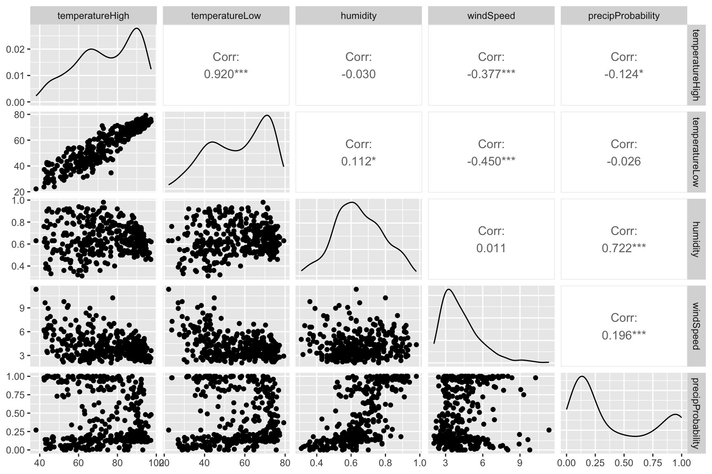
It looks like high and low temperatures are extremely highly positively correlated (r = 0.92). Wind spped and temperature are moderately negatively correlated, with low temperatures having a stronger negative correlation (r = -0.45). There’s no correlation whatsoever between low temperatures and the precipitation probability (r = -0.03) or humidity and high temperatures (r = -0.03).
Even though ggpairs() doesn’t use the standard ggplot(...) + geom_whatever() syntax we’re familiar with, it does behind the scenes, so you can add regular ggplot layers to it:
ggpairs(weather_correlations) +
labs(title = "Correlations!") +
theme_dark()Scatterplot matrices typically include way too much information to be used in actual publications. I use them when doing my own analysis just to see how different variables are related, but I rarely polish them up for public consumption. In the readings for this week, Claus Wilke showed a type of plot called a correlogram which is more appropriate for publication.
These are essentially heatmaps of the different correlation coefficients. To make these with ggplot, we need to do a little bit of extra data processing, mostly to reshape data into a long, tidy format that we can plot. Here’s how.
First we need to build a correlation matrix of the main variables we care about. Ordinarily the cor() function in R takes two arguments—x and y—and it will return a single correlation value. If you feed a data frame into cor() though, it’ll calculate the correlation between each pair of columns
# Create a correlation matrix
things_to_correlate <- weather_atl |>
select(temperatureHigh, temperatureLow, humidity, windSpeed, precipProbability) |>
cor()
things_to_correlate
## temperatureHigh temperatureLow humidity windSpeed precipProbability
## temperatureHigh 1.00 0.920 -0.030 -0.377 -0.124
## temperatureLow 0.92 1.000 0.112 -0.450 -0.026
## humidity -0.03 0.112 1.000 0.011 0.722
## windSpeed -0.38 -0.450 0.011 1.000 0.196
## precipProbability -0.12 -0.026 0.722 0.196 1.000The two halves of this matrix (split along the diagonal line) are identical, so we can remove the lower triangle with this code (which will set all the cells in the lower triangle to NA):
# Get rid of the lower triangle
things_to_correlate[lower.tri(things_to_correlate)] <- NA
things_to_correlate
## temperatureHigh temperatureLow humidity windSpeed precipProbability
## temperatureHigh 1 0.92 -0.03 -0.377 -0.124
## temperatureLow NA 1.00 0.11 -0.450 -0.026
## humidity NA NA 1.00 0.011 0.722
## windSpeed NA NA NA 1.000 0.196
## precipProbability NA NA NA NA 1.000Finally, in order to plot this, the data needs to be in tidy (or long) format. Here we convert the things_to_correlate matrix into a data frame, add a column for the row names, take all the columns and put them into a single column named measure1, and take all the correlation numbers and put them in a column named cor In the end, we make sure the measure variables are ordered by their order of appearance (otherwise they plot alphabetically and don’t make a triangle)
things_to_correlate_long <- things_to_correlate |>
# Convert from a matrix to a data frame
as.data.frame() |>
# Matrixes have column names that don't get converted to columns when using
# as.data.frame(), so this adds those names as a column
rownames_to_column("measure2") |>
# Make this long. Take all the columns except measure2 and put their names in
# a column named measure1 and their values in a column named cor
pivot_longer(cols = -measure2,
names_to = "measure1",
values_to = "cor") |>
# Make a new column with the rounded version of the correlation value
mutate(nice_cor = round(cor, 2)) |>
# Remove rows where the two measures are the same (like the correlation
# between humidity and humidity)
filter(measure2 != measure1) |>
# Get rid of the empty triangle
filter(!is.na(cor)) |>
# Put these categories in order
mutate(measure1 = fct_inorder(measure1),
measure2 = fct_inorder(measure2))
things_to_correlate_long
## # A tibble: 10 × 4
## measure2 measure1 cor nice_cor
## <fct> <fct> <dbl> <dbl>
## 1 temperatureHigh temperatureLow 0.920 0.92
## 2 temperatureHigh humidity -0.0301 -0.03
## 3 temperatureHigh windSpeed -0.377 -0.38
## 4 temperatureHigh precipProbability -0.124 -0.12
## 5 temperatureLow humidity 0.112 0.11
## 6 temperatureLow windSpeed -0.450 -0.45
## 7 temperatureLow precipProbability -0.0255 -0.03
## 8 humidity windSpeed 0.0108 0.01
## 9 humidity precipProbability 0.722 0.72
## 10 windSpeed precipProbability 0.196 0.2Phew. With the data all tidied like that, we can make a correlogram with a heatmap. This is just like the heatmap you made in session 4, but here we manipulate the fill scale a little so that it’s diverging with three colors: a high value, a midpoint value, and a low value.
ggplot(things_to_correlate_long,
aes(x = measure2, y = measure1, fill = cor)) +
geom_tile() +
geom_text(aes(label = nice_cor)) +
scale_fill_gradient2(low = "#E16462", mid = "white", high = "#0D0887",
limits = c(-1, 1)) +
labs(x = NULL, y = NULL) +
coord_equal() +
theme_minimal() +
theme(panel.grid = element_blank())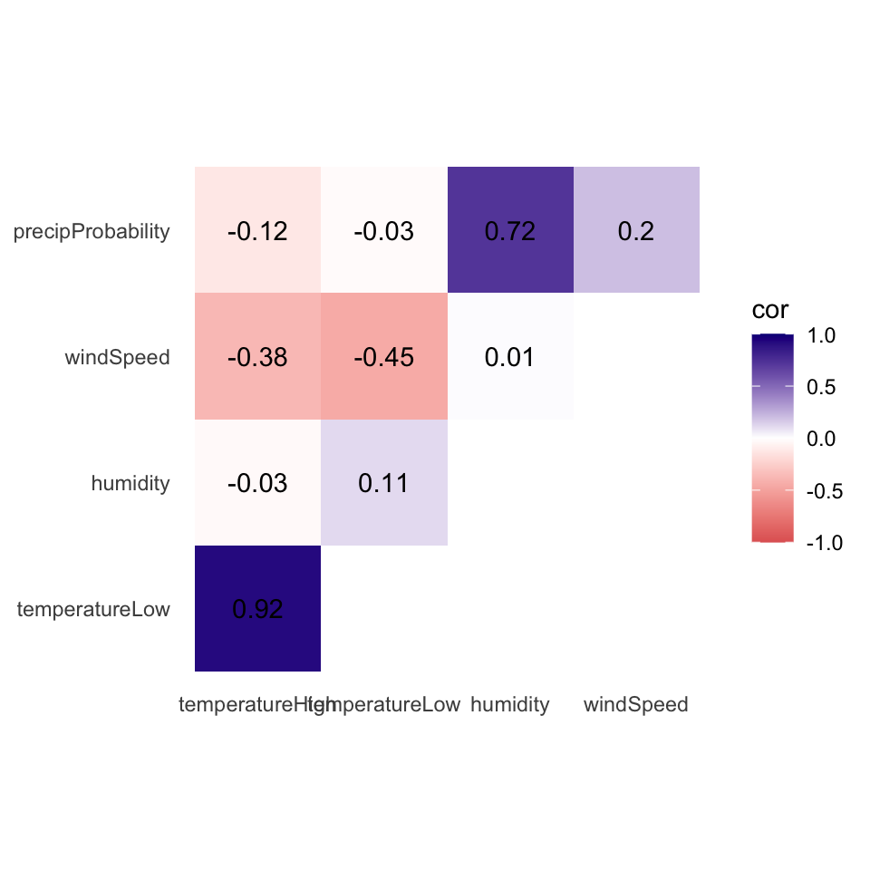
Instead of using a heatmap, we can also use points, which encode the correlation information both as color and as size. To do that, we just need to switch geom_tile() to geom_point() and set the size = cor mapping:
ggplot(things_to_correlate_long,
aes(x = measure2, y = measure1, color = cor)) +
# Size by the absolute value so that -0.7 and 0.7 are the same size
geom_point(aes(size = abs(cor))) +
scale_color_gradient2(low = "#E16462", mid = "white", high = "#0D0887",
limits = c(-1, 1)) +
scale_size_area(max_size = 15, limits = c(-1, 1), guide = "none") +
labs(x = NULL, y = NULL) +
coord_equal() +
theme_minimal() +
theme(panel.grid = element_blank())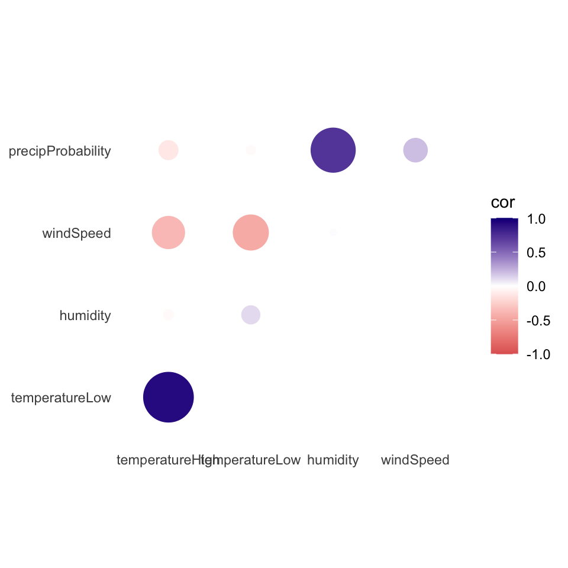
We can also visualize the relationships between variables using regression. Simple regression is easy to visualize, since you’re only working with an X and a Y. For instance, what’s the relationship between humidity and high temperatures during the summer?
First, let’s filter the data to only look at the summer. We also add a column to scale up the humidity value—right now it’s on a scale of 0-1 (for percentages), but when interpreting regression we talk about increases in whole units, so we’d talk about moving from 0% humidity to 100% humidity, which isn’t helpful, so instead we multiply everything by 100 so we can talk about moving from 50% humidity to 51% humidity. We also scale up a couple other variables that we’ll use in the larger model later.
weather_atl_summer <- weather_atl |>
filter(time >= "2019-05-01", time <= "2019-09-30") |>
mutate(humidity_scaled = humidity * 100,
moonPhase_scaled = moonPhase * 100,
precipProbability_scaled = precipProbability * 100,
cloudCover_scaled = cloudCover * 100)Then we can build a simple regression model:
model_simple <- lm(temperatureHigh ~ humidity_scaled,
data = weather_atl_summer)
tidy(model_simple, conf.int = TRUE)
## # A tibble: 2 × 7
## term estimate std.error statistic p.value conf.low conf.high
## <chr> <dbl> <dbl> <dbl> <dbl> <dbl> <dbl>
## 1 (Intercept) 104. 2.36 44.0 1.13e-87 99.3 109.
## 2 humidity_scaled -0.239 0.0359 -6.65 5.12e-10 -0.310 -0.168We can interpret these coefficients like so:
humidity_scaled shows that a one percent increase in humidity is associated with a 0.241° decrease in temperature, on average.Visualizing this model is simple, since there are only two variables:
ggplot(weather_atl_summer,
aes(x = humidity_scaled, y = temperatureHigh)) +
geom_point() +
geom_smooth(method = "lm")
## `geom_smooth()` using formula = 'y ~ x'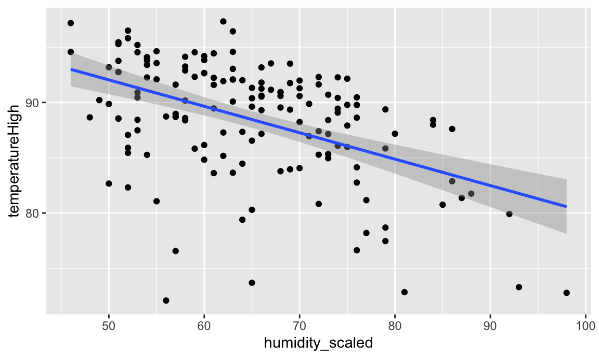
And indeed, as humidity increases, temperatures decrease.
But if we use multiple variables in the model, it gets really hard to visualize the results since we’re working with multiple dimensions. Instead, we can use coefficient plots to see the individual coefficients in the model.
First, let’s build a more complex model:
model_complex <- lm(temperatureHigh ~ humidity_scaled + moonPhase_scaled +
precipProbability_scaled + windSpeed + pressure + cloudCover_scaled,
data = weather_atl_summer)
tidy(model_complex, conf.int = TRUE)
## # A tibble: 7 × 7
## term estimate std.error statistic p.value conf.low conf.high
## <chr> <dbl> <dbl> <dbl> <dbl> <dbl> <dbl>
## 1 (Intercept) 265. 126. 2.11 0.0366 16.7 514.
## 2 humidity_scaled -0.111 0.0759 -1.47 0.144 -0.261 0.0387
## 3 moonPhase_scaled 0.0124 0.0128 0.965 0.336 -0.0129 0.0377
## 4 precipProbability_scaled 0.0358 0.0204 1.75 0.0816 -0.00454 0.0761
## 5 windSpeed -1.76 0.417 -4.22 0.0000430 -2.58 -0.936
## 6 pressure -0.160 0.123 -1.30 0.196 -0.403 0.0834
## 7 cloudCover_scaled -0.0950 0.0304 -3.12 0.00217 -0.155 -0.0349We can interpret these coefficients like so:
To plot all these things at once, we’ll store the results of tidy(model_complex) as a data frame, remove the useless intercept, and plot it using geom_pointrange():
model_tidied <- tidy(model_complex, conf.int = TRUE) |>
filter(term != "(Intercept)")
ggplot(model_tidied,
aes(x = estimate, y = term)) +
geom_vline(xintercept = 0, color = "red", linetype = "dotted") +
geom_pointrange(aes(xmin = conf.low, xmax = conf.high)) +
labs(x = "Coefficient estimate", y = NULL) +
theme_minimal()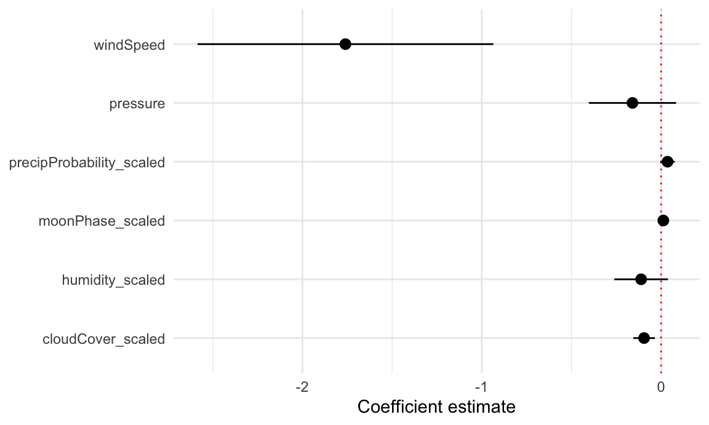
Neat! Now we can see how big these different coefficients are and how close they are to zero. Wind speed has a big significant effect on temperature. The others are all very close to zero.
Since recording the video for this section, lots of things have changed in the R world to make finding predicted values and marginal effects a lot easier. (This is why I had you read my guide to marginal things as part of the readings for this session.) The {marginaleffects} R package makes it really nice and easy to get predicted values of an outcome while holding everything else constant—you don’t need to plug values in manually anymore like this section shows.
There’s an example of using {marginaleffects} down below.
Instead of just looking at the coefficients, we can also see the effect of moving different variables up and down like sliders and switches. Remember that regression coefficients allow us to build actual mathematical formulas that predict the value of Y. The coefficients from model_compex yield the following big hairy ugly equation:
\[ \begin{aligned} \hat{\text{High temperature}} =& 262 - 0.11 \times \text{humidity\_scaled } \\ & + 0.01 \times \text{moonPhase\_scaled } + 0.04 \times \text{precipProbability\_scaled } \\ & - 1.78 \times \text{windSpeed} - 0.16 \times \text{pressure} - 0.095 \times \text{cloudCover\_scaled} \end{aligned} \]
If we plug in values for each of the explanatory variables, we can get the predicted value of high temperature, or \(\hat{y}\).
The augment() function in the {broom} library allows us to take a data frame of explanatory variable values, plug them into the model equation, and get predictions out. For example, let’s set each of the variables to some arbitrary values (50% for humidity, moon phase, chance of rain, and cloud cover; 1000 for pressure, and 1 MPH for wind speed).
newdata_example <- tibble(humidity_scaled = 50, moonPhase_scaled = 50,
precipProbability_scaled = 50, windSpeed = 1,
pressure = 1000, cloudCover_scaled = 50)
newdata_example
## # A tibble: 1 × 6
## humidity_scaled moonPhase_scaled precipProbability_scaled windSpeed pressure cloudCover_scaled
## <dbl> <dbl> <dbl> <dbl> <dbl> <dbl>
## 1 50 50 50 1 1000 50We can plug these values into the model with augment(). The se_fit argument gives us standard errors for each prediction:
# I use select() here because augment() returns columns for all the explanatory
# variables, and the .fitted column with the predicted value is on the far right
# and gets cut off
augment(model_complex, newdata = newdata_example, se_fit = TRUE) |>
select(.fitted, .se.fit)
## # A tibble: 1 × 2
## .fitted .se.fit
## <dbl> <dbl>
## 1 96.2 3.20Given these weather conditions, the predicted high temperature is 96.2°. Now you’re an armchair meteorologist!
We can follow the same pattern to show how the predicted temperature changes as specific variables change across a whole range. Here, we create a data frame of possible wind speeds and keep all the other explanatory variables at their means:
newdata <- tibble(windSpeed = seq(0, 8, 0.5),
pressure = mean(weather_atl_summer$pressure),
precipProbability_scaled = mean(weather_atl_summer$precipProbability_scaled),
moonPhase_scaled = mean(weather_atl_summer$moonPhase_scaled),
humidity_scaled = mean(weather_atl_summer$humidity_scaled),
cloudCover_scaled = mean(weather_atl_summer$cloudCover_scaled))
newdata
## # A tibble: 17 × 6
## windSpeed pressure precipProbability_scaled moonPhase_scaled humidity_scaled cloudCover_scaled
## <dbl> <dbl> <dbl> <dbl> <dbl> <dbl>
## 1 0 1016. 40.4 51.0 64.9 29.7
## 2 0.5 1016. 40.4 51.0 64.9 29.7
## 3 1 1016. 40.4 51.0 64.9 29.7
## 4 1.5 1016. 40.4 51.0 64.9 29.7
## 5 2 1016. 40.4 51.0 64.9 29.7
## 6 2.5 1016. 40.4 51.0 64.9 29.7
## 7 3 1016. 40.4 51.0 64.9 29.7
## 8 3.5 1016. 40.4 51.0 64.9 29.7
## 9 4 1016. 40.4 51.0 64.9 29.7
## 10 4.5 1016. 40.4 51.0 64.9 29.7
## 11 5 1016. 40.4 51.0 64.9 29.7
## 12 5.5 1016. 40.4 51.0 64.9 29.7
## 13 6 1016. 40.4 51.0 64.9 29.7
## 14 6.5 1016. 40.4 51.0 64.9 29.7
## 15 7 1016. 40.4 51.0 64.9 29.7
## 16 7.5 1016. 40.4 51.0 64.9 29.7
## 17 8 1016. 40.4 51.0 64.9 29.7If we feed this big data frame into augment(), we can get the predicted high temperature for each row. We can also use the .se.fit column to calculate the 95% confidence interval for each predicted value. We take the standard error, multiply it by -1.96 and 1.96 (or the quantile of the normal distribution at 2.5% and 97.5%), and add that value to the estimate.
predicted_values <- augment(model_complex,
newdata = newdata,
se_fit = TRUE) |>
mutate(conf.low = .fitted + (-1.96 * .se.fit),
conf.high = .fitted + (1.96 * .se.fit))
predicted_values |>
select(windSpeed, .fitted, .se.fit, conf.low, conf.high) |>
head()
## # A tibble: 6 × 5
## windSpeed .fitted .se.fit conf.low conf.high
## <dbl> <dbl> <dbl> <dbl> <dbl>
## 1 0 95.3 1.64 92.0 98.5
## 2 0.5 94.4 1.44 91.6 97.2
## 3 1 93.5 1.24 91.1 95.9
## 4 1.5 92.6 1.04 90.6 94.7
## 5 2 91.7 0.846 90.1 93.4
## 6 2.5 90.9 0.662 89.6 92.2Cool! Just looking at the data in the table, we can see that predicted temperature drops as windspeed increases. We can plot this to visualize the effect:
ggplot(predicted_values, aes(x = windSpeed, y = .fitted)) +
geom_ribbon(aes(ymin = conf.low, ymax = conf.high),
fill = "#BF3984", alpha = 0.5) +
geom_line(linewidth = 1, color = "#BF3984") +
labs(x = "Wind speed (MPH)", y = "Predicted high temperature (F)") +
theme_minimal()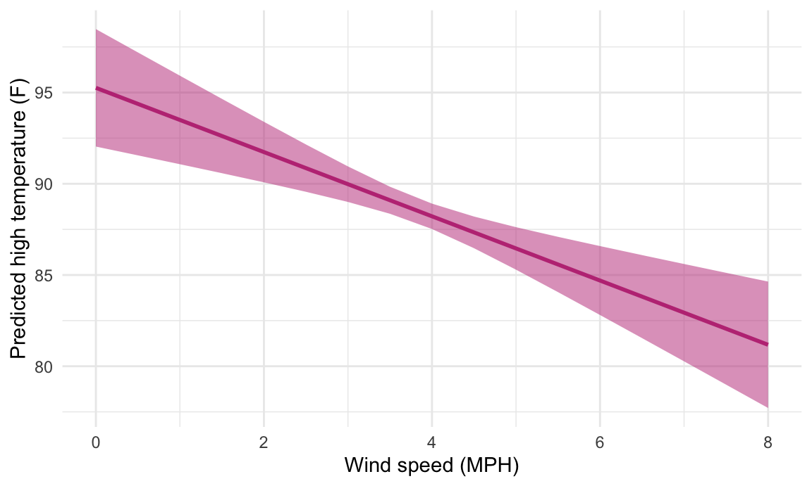
We just manipulated one of the model coefficients and held everything else at its mean. We can manipulate multiple variables too and encode them all on the graph. For instance, what is the effect of windspeed and cloud cover on the temperature?
We’ll follow the same process, but vary both windSpeed and cloudCover_scaled. Instead of using tibble(), we use exapnd_grid(), which creates every combination of the variables we specify. Instead of varying cloud cover by every possible value (like from 0 to 100), we’ll choose four possible cloud cover types: 0%, 33%, 66%, and 100%. Everything else will be at its mean.
newdata_fancy <- expand_grid(windSpeed = seq(0, 8, 0.5),
pressure = mean(weather_atl_summer$pressure),
precipProbability_scaled = mean(weather_atl_summer$precipProbability_scaled),
moonPhase_scaled = mean(weather_atl_summer$moonPhase_scaled),
humidity_scaled = mean(weather_atl_summer$humidity_scaled),
cloudCover_scaled = c(0, 33, 66, 100))
newdata_fancy
## # A tibble: 68 × 6
## windSpeed pressure precipProbability_scaled moonPhase_scaled humidity_scaled cloudCover_scaled
## <dbl> <dbl> <dbl> <dbl> <dbl> <dbl>
## 1 0 1016. 40.4 51.0 64.9 0
## 2 0 1016. 40.4 51.0 64.9 33
## 3 0 1016. 40.4 51.0 64.9 66
## 4 0 1016. 40.4 51.0 64.9 100
## 5 0.5 1016. 40.4 51.0 64.9 0
## 6 0.5 1016. 40.4 51.0 64.9 33
## 7 0.5 1016. 40.4 51.0 64.9 66
## 8 0.5 1016. 40.4 51.0 64.9 100
## 9 1 1016. 40.4 51.0 64.9 0
## 10 1 1016. 40.4 51.0 64.9 33
## # ℹ 58 more rowsNotice now that windSpeed repeats four times (0, 0, 0, 0, 0.5, 0.5, etc.), since there are four possible cloudCover_scaled values (0, 33, 66, 100).
We can plot this now, just like before, with wind speed on the x-axis, the predicted temperature on the y-axis, and colored and faceted by cloud cover:
predicted_values_fancy <- augment(model_complex,
newdata = newdata_fancy,
se_fit = TRUE) |>
mutate(conf.low = .fitted + (-1.96 * .se.fit),
conf.high = .fitted + (1.96 * .se.fit)) |>
# Make cloud cover a categorical variable so we can facet with it
mutate(cloudCover_scaled = factor(cloudCover_scaled))
ggplot(predicted_values_fancy, aes(x = windSpeed, y = .fitted)) +
geom_ribbon(aes(ymin = conf.low, ymax = conf.high, fill = cloudCover_scaled),
alpha = 0.5) +
geom_line(aes(color = cloudCover_scaled), linewidth = 1) +
labs(x = "Wind speed (MPH)", y = "Predicted high temperature (F)") +
theme_minimal() +
guides(fill = "none", color = "none") +
facet_wrap(vars(cloudCover_scaled), nrow = 1)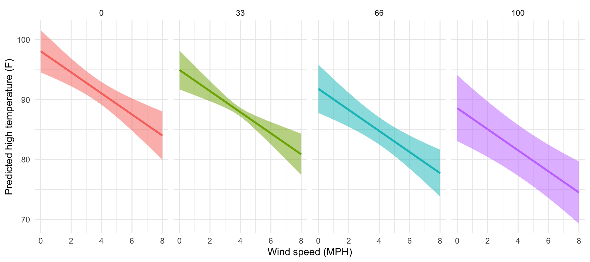
That’s so neat! Temperatures go down slightly as cloud cover increases. If we wanted to improve the model, we’d add an interaction term between cloud cover and windspeed so that each line would have a different slope in addition to a different intercept, but that’s beyond the scope of this class.
Instead of using expand_grid() and augment() to create and plug in a mini dataset of variables to move up and down, we can use the {marginaleffects} package to simplify life!
Remember above where we wanted to see the effect of wind speed on temperature while holding all other variables in the model constant. We had to create a small data frame (newdata) with columns for each of the variables in the model, with everything except windSpeed set to their averages. We then plugged newdata into the model with augment() and calculated the confidence interval around each predicted value using mutate(). It’s a fairly involved process, but it works:
# Make model
model_complex <- lm(temperatureHigh ~ humidity_scaled + moonPhase_scaled +
precipProbability_scaled + windSpeed + pressure + cloudCover_scaled,
data = weather_atl_summer)
# Make mini dataset
newdata <- tibble(windSpeed = seq(0, 8, 0.5),
pressure = mean(weather_atl_summer$pressure),
precipProbability_scaled = mean(weather_atl_summer$precipProbability_scaled),
moonPhase_scaled = mean(weather_atl_summer$moonPhase_scaled),
humidity_scaled = mean(weather_atl_summer$humidity_scaled),
cloudCover_scaled = mean(weather_atl_summer$cloudCover_scaled))
# Plug mini dataset into model
predicted_values <- augment(model_complex,
newdata = newdata,
se_fit = TRUE) |>
mutate(conf.low = .fitted + (-1.96 * .se.fit),
conf.high = .fitted + (1.96 * .se.fit))
# Look at predicted values
predicted_values |>
select(windSpeed, .fitted, .se.fit, conf.low, conf.high) |>
head()
## # A tibble: 6 × 5
## windSpeed .fitted .se.fit conf.low conf.high
## <dbl> <dbl> <dbl> <dbl> <dbl>
## 1 0 95.3 1.64 92.0 98.5
## 2 0.5 94.4 1.44 91.6 97.2
## 3 1 93.5 1.24 91.1 95.9
## 4 1.5 92.6 1.04 90.6 94.7
## 5 2 91.7 0.846 90.1 93.4
## 6 2.5 90.9 0.662 89.6 92.2The {marginaleffects} package makes this far easier. We can use the predictions() function to generate, um, predictions. We still need to feed it a smaller dataset of variables to manipulate, but if we use the datagrid() function, we only have to specify the variables we want to move. It will automatically use the averages or typical values for all other variables in the model. It will also automatically create confidence intervals for each prediction—no need for the mutate(conf.low = .fitted + (-1.96 * .se.fit)) math that we did previously.
library(marginaleffects)
# Calculate predictions across a range of windSpeed
predicted_values_easy <- predictions(
model_complex,
newdata = datagrid(windSpeed = seq(0, 8, 0.5))
)
# Look at predicted values
predicted_values_easy |>
select(windSpeed, estimate, std.error, conf.low, conf.high)
##
## Estimate Std. Error 2.5 % 97.5 %
## 95.2 1.646 92.0 98.4
## 94.3 1.443 91.5 97.1
## 93.4 1.241 91.0 95.9
## 92.6 1.043 90.5 94.6
## 91.7 0.849 90.0 93.3
## 90.8 0.665 89.5 92.1
## 89.9 0.499 88.9 90.9
## 89.0 0.380 88.3 89.8
## 88.2 0.355 87.5 88.9
## 87.3 0.441 86.4 88.1
## 86.4 0.592 85.2 87.6
## 85.5 0.770 84.0 87.0
## 84.6 0.961 82.8 86.5
## 83.8 1.157 81.5 86.0
## 82.9 1.358 80.2 85.5
## 82.0 1.560 78.9 85.1
## 81.1 1.764 77.7 84.6We can then plot this really easily too:
ggplot(predicted_values_easy, aes(x = windSpeed, y = estimate)) +
geom_ribbon(aes(ymin = conf.low, ymax = conf.high),
fill = "#BF3984", alpha = 0.5) +
geom_line(linewidth = 1, color = "#BF3984") +
labs(x = "Wind speed (MPH)", y = "Predicted high temperature (F)") +
theme_minimal()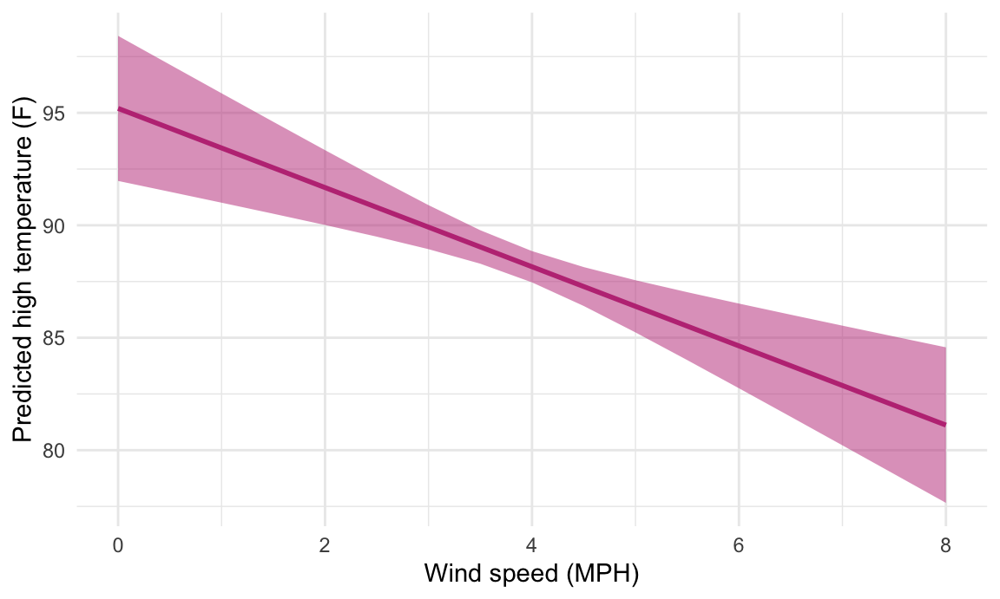
This works when moving multiple variables at the same time, too. Earlier we used expand_grid() to create a mini dataset of different values for both windSpeed and cloudCover, while holding all the other variables at their means. Here’s how to do that with the much easier predictions() function:
predicted_values_fancy_easy <- predictions(
model_complex,
newdata = datagrid(windSpeed = seq(0, 8, 0.5),
cloudCover_scaled = c(0, 33, 66, 100))) |>
# Make cloud cover a categorical variable so we can facet with it
mutate(cloudCover_scaled = factor(cloudCover_scaled))
ggplot(predicted_values_fancy_easy, aes(x = windSpeed, y = estimate)) +
geom_ribbon(aes(ymin = conf.low, ymax = conf.high, fill = cloudCover_scaled),
alpha = 0.5) +
geom_line(aes(color = cloudCover_scaled), linewidth = 1) +
labs(x = "Wind speed (MPH)", y = "Predicted high temperature (F)") +
theme_minimal() +
guides(fill = "none", color = "none") +
facet_wrap(vars(cloudCover_scaled), nrow = 1)That’s it! predictions() makes this so easy!
If we’re interested in the slopes (or marginal effects) of these lines, we can calculate these really easily too with the slopes() function. For instance, here are the predicted temperatures when just manipulating wind speed:
ggplot(predicted_values_easy, aes(x = windSpeed, y = estimate)) +
geom_ribbon(aes(ymin = conf.low, ymax = conf.high),
fill = "#BF3984", alpha = 0.5) +
geom_line(linewidth = 1, color = "#BF3984") +
labs(x = "Wind speed (MPH)", y = "Predicted high temperature (F)") +
theme_minimal()
If we want to see what the slope of that line is when wind speed is 2, 4 and 6, we can use slopes():
slopes(model_complex,
newdata = datagrid(windSpeed = c(2, 4, 6)),
variables = "windSpeed") |>
# This creates a ton of extra columns so we'll just look at a few
select(term, windSpeed, estimate, std.error, p.value, conf.low, conf.high, predicted)
##
## Estimate Std. Error Pr(>|z|) 2.5 % 97.5 %
## -1.76 0.417 <0.001 -2.58 -0.944
## -1.76 0.417 <0.001 -2.58 -0.944
## -1.76 0.417 <0.001 -2.58 -0.942
##
## Term: windSpeedThe estimate column here shows that slope at each of those values of windSpeed is -1.8, meaning a 1-MPH increase in wind speed is associated with a nearly 2° decrease in predicted high temperature, on average. That’s not super exciting though, since the predicted values create a nice straight line, with the same slope across the whole range of the line. It’s also the same number we get from the model coefficient—run tidy(model_complex) and you’ll see that the coefficient for windSpeed is -1.78. Since everything is linear here, using slopes() isn’t that important.
For bonus fun and excitement, let’s make an even more complex model with some non-linear curvy stuff and some interaction terms. We’ll include both wind speed and wind speed squared (since maybe higher wind speeds have a larger effect on predicted temperatures), and the interaction between wind speed and cloud cover (since maybe temperature behaves differently at different combinations of wind speed and cloud cover). Again, I’m not a meteorologist so this model is definitely wrong, but it gives us some neat moving parts we can play with.
# Make model
# We square windSpeed with I(windSpeed^2). The I() function lets you do math
# with regression terms.
# We make an interaction term with *
model_wild <- lm(temperatureHigh ~ humidity_scaled + moonPhase_scaled +
precipProbability_scaled + windSpeed + I(windSpeed^2) +
pressure + cloudCover_scaled + (windSpeed * cloudCover_scaled),
data = weather_atl_summer)
tidy(model_wild)
## # A tibble: 9 × 5
## term estimate std.error statistic p.value
## <chr> <dbl> <dbl> <dbl> <dbl>
## 1 (Intercept) 269. 126. 2.13 0.0347
## 2 humidity_scaled -0.123 0.0769 -1.60 0.113
## 3 moonPhase_scaled 0.0120 0.0130 0.925 0.356
## 4 precipProbability_scaled 0.0397 0.0208 1.91 0.0583
## 5 windSpeed 0.443 2.64 0.168 0.867
## 6 I(windSpeed^2) -0.233 0.335 -0.694 0.489
## 7 pressure -0.168 0.124 -1.35 0.178
## 8 cloudCover_scaled -0.0669 0.0832 -0.804 0.423
## 9 windSpeed:cloudCover_scaled -0.00740 0.0197 -0.377 0.707We have some strange new regression coefficients now. We have two coefficients for wind speed: windSpeed and I(windSpeed^2). We also have a coefficient for the interaction term windspeed:cloudCover_scaled. We cannot interpret these individually. If we want to know the effect of wind speed on high temperatures, we have to incorporate all three of these new coefficients simultaneously. Fortunately predictions() and slopes() both handle that for us automatically.
Let’s plot the predictions to see that everything is more curvy now (and differently curved across different levels of cloud cover).
predicted_values_wild <- predictions(
model_wild,
newdata = datagrid(windSpeed = seq(0, 8, 0.5),
cloudCover_scaled = c(0, 33, 66, 100))) |>
# Make cloud cover a categorical variable so we can facet with it
mutate(cloudCover_scaled = factor(cloudCover_scaled))
ggplot(predicted_values_wild, aes(x = windSpeed, y = estimate)) +
geom_ribbon(aes(ymin = conf.low, ymax = conf.high, fill = cloudCover_scaled),
alpha = 0.5) +
geom_line(aes(color = cloudCover_scaled), linewidth = 1) +
labs(x = "Wind speed (MPH)", y = "Predicted high temperature (F)") +
theme_minimal() +
guides(fill = "none", color = "none") +
facet_wrap(vars(cloudCover_scaled), nrow = 1)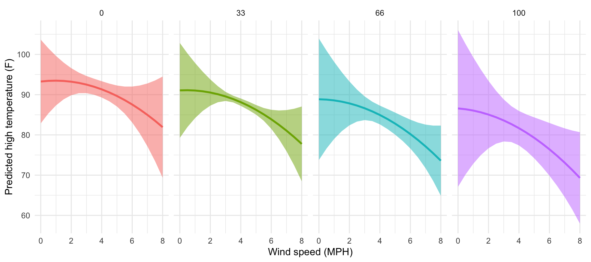
That’s neat! At all the different levels of cloud cover, the wind speed trend is fairly shallow (and even pretty flat when cloud cover is 0 or 33) at low levels of wind speed. The line drops fairly quickly as wind speed increases though. Let’s get some exact numbers with marginaleffects():
slopes(model_wild,
newdata = datagrid(windSpeed = c(2, 4, 6),
cloudCover_scaled = c(0, 33, 66, 100)),
variables = "windSpeed") |>
# This creates a ton of extra columns so we'll just look at a few
select(term, windSpeed, estimate, std.error, p.value, conf.low, conf.high, predicted)
##
## Estimate Std. Error Pr(>|z|) 2.5 % 97.5 %
## -0.488 1.381 0.7240 -3.19 2.2196
## -0.732 1.561 0.6390 -3.79 2.3269
## -0.976 1.951 0.6167 -4.80 2.8472
## -1.228 2.466 0.6185 -6.06 3.6053
## -1.418 0.700 0.0427 -2.79 -0.0463
## -1.663 0.449 <0.001 -2.54 -0.7827
## -1.907 0.869 0.0282 -3.61 -0.2038
## -2.159 1.487 0.1465 -5.07 0.7549
## -2.349 1.658 0.1564 -5.60 0.8998
## -2.593 1.278 0.0424 -5.10 -0.0886
## -2.838 1.167 0.0150 -5.12 -0.5512
## -3.089 1.401 0.0275 -5.84 -0.3432
##
## Term: windSpeedPhew, we have 12 different slopes here. Let’s talk through a few of them to get the intuition. If cloud cover is 0 and wind speed is 2 MPH, moving from 2 to 3 MPH is associated with a -0.68° decrease in high temperature on average (see the estimate column in the first row in the table). If the existing wind speed is 6 MPH, moving from 6 to 7 is associated with a -2.27° decrease in high temperature on average (see the estimate column in the 9th row of the table). The slope is steeper and more negative when the wind is faster, so changes in temperature are more dramatic. Because we have an interaction with cloud cover, the slope also changes at different levels of cloud cover. At 2 MPH of wind, the slope is -0.68° when cloud cover is 0 (first row), but -1.37° when cloud cover is 100 (4th row).
Finally, we can visualize how these slopes change across wind speed and cloud cover by plotting them:
slopes_wild <- slopes(
model_wild,
newdata = datagrid(windSpeed = seq(0, 6, by = 0.1),
cloudCover_scaled = c(0, 33, 66, 100)),
variables = "windSpeed") |>
mutate(cloudCover_scaled = factor(cloudCover_scaled))
ggplot(slopes_wild, aes(x = windSpeed, y = estimate)) +
geom_ribbon(aes(ymin = conf.low, ymax = conf.high, fill = cloudCover_scaled),
alpha = 0.5) +
geom_line(aes(color = cloudCover_scaled), linewidth = 1) +
labs(x = "Wind speed (MPH)", y = "Slope (marginal effect) of wind speed",
title = "Marginal effect of wind speed across levels of cloud cover",
subtitle = "These are *slopes*, not predicted values") +
theme_minimal() +
guides(fill = "none", color = "none") +
facet_wrap(vars(cloudCover_scaled), nrow = 1)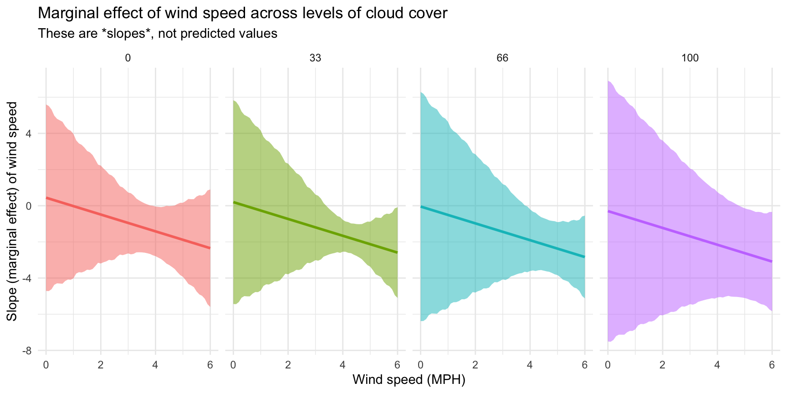